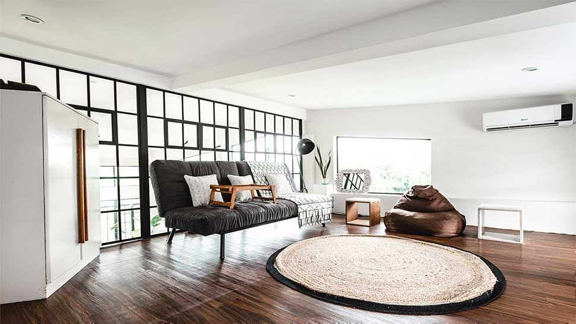
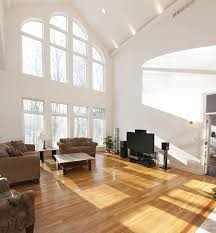
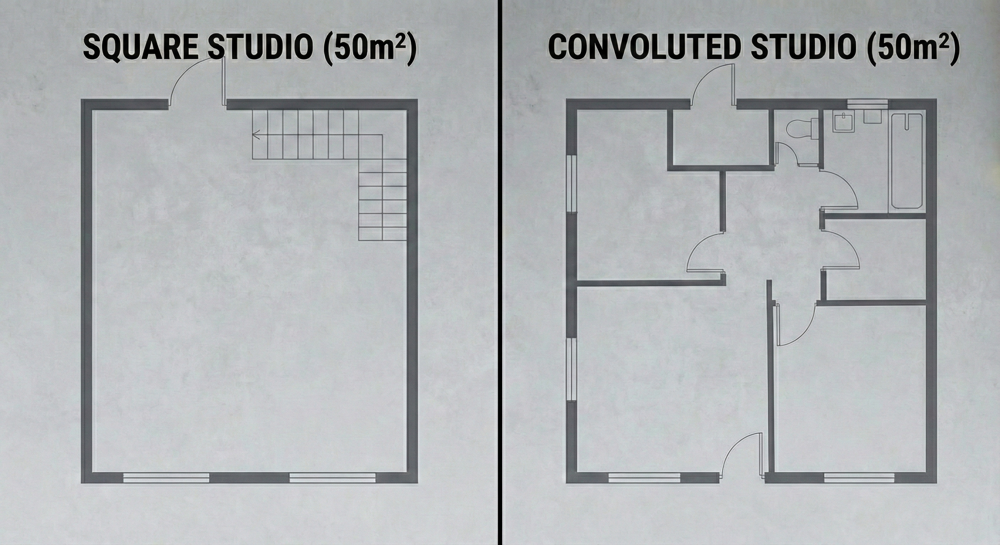
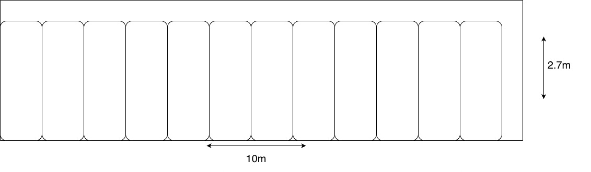

The (adjusted) cost of books
According to Umberto Eco, the biggest problem with books is where to put them. He describes the problem in a conversation between him and Jean-Claude Carrière reported in This is Not the End of the Book:
I once did some calculations about this, it was quite a while ago and I should probably do it again. I researched the price per square meter of a Milan apartment that was neither in the old town - too expensive - nor in the poor suburbs. I had to get my head around the fact that the nice reasonably bourgeois apartment would cost me six thousand Euros per square metre or three hundred thousand for an apartment of fifty square meters. I then subtracted the doors, windows and all elements that cut down on the apartment’s vertical space, mainly the walls that might host bookshelves, and that left me with only twenty-five square meters, so one vertical square meter would cost me twelve thousand Euros. I then researched the cheapest price for a six-shelf bookcase, which was five hundred Euros per square meter. I could probably store three hundred books per a six-shelf square meter, the cost of storing each book therefore would be about forty-two Euros, more than the price of the book itself. So each person who sent me a book should include a check for that amount.
The more I read this paragraph, the more I see that there’s something wrong with it. Still, the rhetorical brilliance of Umberto Eco makes it non-trivial to spot the mistake. So I decided to dissect his assumptions and identify the fallacies in his reasoning. Eventually, I want to figure out what the actual cost of storing a book in an apartment in Milan is.
The usable wall reduction geometric fallacy
According to Eco’s logic, you buy the floor, but you only use the walls for bookshelves. You don’t want to put a bookshelf in the middle of a room. Windows, doors, and radiators steal your space as they interrupt the continuous wall surface. This is reasonable. Next, he reduces the floor space by half to get the available wall space reserved for book storage. As an example, an apartment of 50 m² only has 25 m² of usable wall space. Here’s where the geometry goes off: 50 m² refers to the floor area, which is how apartments are usually measured. Floor area is a horizontal surface, but here it gets mixed up with the wall area, which is a vertical surface. In reality, the relation between the two is not straightforward: usable wall area is a function of perimeter and height, not floor area. For example, a room with the same floor area can have very different wall area according to the height of the ceiling.


Additionally, a 50 m² studio with a convoluted internal shape and many rooms will have more wall area than a 50 m² square loft, even when the two have the same ceiling height.

Unfortunately, any reference to perimeter, height, or shape of the apartment is missing in Eco’s analysis.
The sole purpose fallacy
Eco attributes 100% of the apartment’s cost to storing books, without ever explicitly acknowledging it. The consequence is that the per-book storage cost gets highly inflated.
If Eco were to allocate the apartment solely as a place to store books, he could place additional bookshelves in the middle of the rooms, rather than only along the walls. On the other hand, if the apartment was also used to sleep, shower, cook, and live, it would be misleading to amortize the real-estate cost entirely against the space occupied by books.
The capEx vs opEx fallacy
Capital expenditure (capEx) refers to expenses to buy assets that have a long-term (> 1 year) life span. For example, buying a €300,000 apartment is a capital expense as it conserves and, potentially, increases its value over time. More importantly, the apartment is not “consumed” by books. Instead, Eco treats this one-time investment as if it were an operating cost (opEx) charged to store each book. Treating real estate capEx as opEx would make sense only if books permanently reduced the resale value of the apartment, which they don’t. As a result, after a few years, the €42 checks collected by Eco for each book would accrue on top of the (potentially increased) value of the apartment.
A more accurate and economically sound reasoning is to analyse the cost of storing a book in terms of the opportunity cost: the presence of the book prevents you from earning income from that space, for example, by renting it out.
The adjusted cost of storing a book
Eco’s passage feels correct and persuasive, even though its logic collapses under deeper inspection. His chain of reasoning seems plausible at first glance. He uses rounded numbers to create a false sense of order that feels comfortable for the reader. Eco smuggles the reasoning error by blending floor area, wall area, and bookshelf here by using the same term (“square meter”). Additionally, the ironic final punchline lowers the rational defences of the reader, persuading them to accept the absurdity of the consequences of gentrification in big cities, a topic that always gets people upset.
In order to establish a more precise estimate of the cost of storing a book in Milan, I’ll throw away Eco’s faulty assumptions and start from a different premise, which better resonates with the majority of people: the person who is gifted the books already owns an apartment and, because the number of those is rapidly increasing, needs to allocate a room of his apartment solely as a library.
I’ll try to answer the following question: What is the opportunity cost of using that room for books rather than renting it to a student?
An asterisk “*” indicates that the information/assumption has been sourced through Gemini.
In a typical Italian flat of that size, you’d expect one room in the range of 10–14 m² to serve as a bedroom or study. To stay concrete, let’s assume this room to be a 3 x 4 meter rectangle (12 m² floor area) with a 2.7 meter ceiling.
The room’s perimeter is 2 x (3 + 4) = 14m. You must reserve some wall space for the door, a window, and breathing room around corners. By conservatively subtracting about 4m for those interruptions, there is roughly 10m of usable linear wall left.
Consider an IKEA BILLY (80 cm wide x 28cm deep x 237cm high) as a target bookshelf. The room can fit $\lfloor\frac{10}{0.8}\rfloor = 12$ bookshelves. Since each bookshelf can fit 210 books, overall, the room can store $210 \times 12 = 2520$ books.

The next question is: what income is foregone by not renting this room out? Data shows that a single room in a shared apartment typically rents in the €400–900/month range*. Let’s take €650/month as a reference value for a room in a nice, reasonably bourgeois apartment in Milan. €7800/year is the opportunity cost of dedicating this room to books instead of renting it to a student.
Finally, divide this cost by the number of books the room can hold to find the opportunity cost associated to each book per year:
$$ \frac{7800}{2520} \approx 3.1 \space \text{€ per book per year} $$
The conclusion is that storing a book in a dedicated Milan library room costs approximately €3 per year in foregone rent. Note that I have ignored the cost of the bookcases themselves. A BILLY of this size sells for €85. 12 units would cost €1020 in total, which, amortised over a decade, adds only $\approx$ €100 per year — barely €0.04 per book per year on top of the €3.1 opportunity cost.
At €3.1 per book per year, Eco’s €42 “check per book” is reached after about 13.5 years. So, suppose you keep the book received as a gift in that dedicated library for roughly 14 years. In that case, Eco’s exaggerated number actually becomes right in cumulative terms (even without adjusting for inflation!).